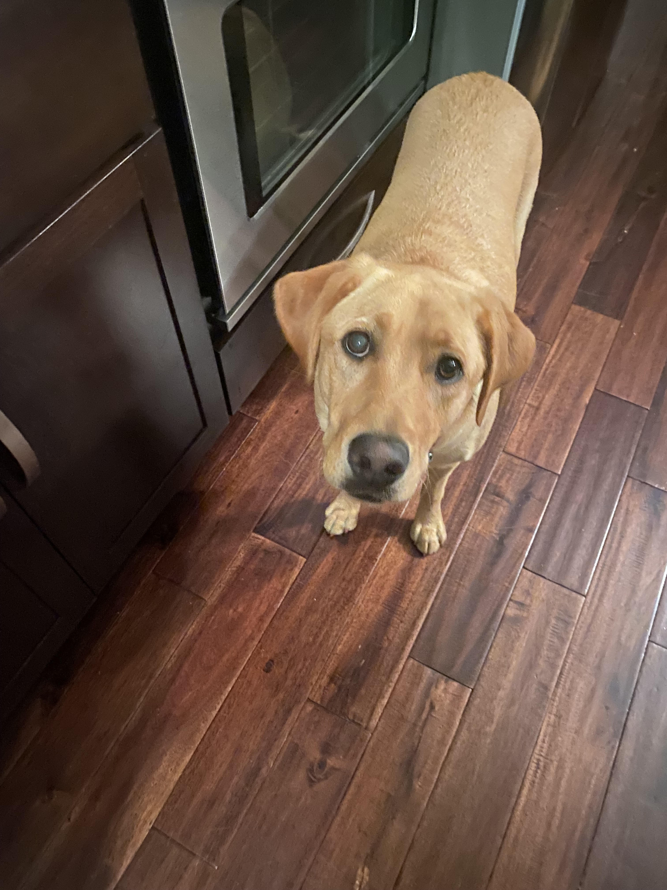

Hazel

Hazel is a year-old yellow Labrador retriever that enjoys long walks and playing catch (in or out of the water). She has a lot of energy, so she gets restless if she does not have enough exercise. Hazel loves meeting new people and seeing old friends. She likes to jump on people, but she is friendly and does not mean any harm. Hazel will eat anything and everything. Like most Labrador retrievers, she loves food and will eat things that are not actually edible. Some of the things that Hazel has chewed on include hand towels, blankets, Apple Airpods, and Halloween decorations. She also loves to eat human food such as lettuce.
Read More...Photo Gallery



Likes
- Hazel likes to swim and catch her stick in the water.
- Hazel likes to go on long walks.
- Hazel likes tough chewing toys.
Daisy

When Daisy isn’t busy slaying all of the evil snakes trying to attack us (Pictured Above), you can usually find her annoying her older sister Marina, getting super hyper at completely random times, or relaxing in our backyard making sure she keeps out all of the intruders (squirrels) One of Daisy’s favorite things to do is beg to go on a walk, and then once we’re about half way done with the walk she likes to lay down and refuse to keep going. She then loves being carried all the way back from said walk, and the process will repeat again later in the day.
Read More...Photo Gallery


Likes
- Shredded Cheese
- Walks around the neighborhood
- Peanut Butter Chex Cereal (specifically peanut butter kind)
Biscuit

Biscuit is a 2 year old shiba inu dog. Shiba inus are energetic and playful dogs. Biscuit enjoys running outside in circles and then laying down in the grass in the sun for hours. He also likes going for occasional swims. As energetic as Biscuit is, he also likes to relax. He loves to sleep in his dog bed and watch Netflix with his owners. His favorite treat are apples.
Read More...Photo Gallery


Likes
- Going for walks
- Swimming
- Apples
Bacon

Bacon Q. Dog is a 9yr old labradoodle. He prefers to spend his days lounging among the three different beds/couches that his family has gifted him. He enjoys a walk or two around the neighborhood, as long as he can pretend that he doesn't see any of the other animals to avoid the embarrassment of not wanting to admit he has no wolf-like skills in chasing them. At night just as the rest of the family is ready to relax, Bacon suddenly wants to release all of his energy. He will place his toys on a mini couch and frantically drag the couch around, giving his toys "a ride." There is also a lot of rolling. Lots and lots of rolling.
Read More...Photo Gallery


Likes
- Belly rubs
- Playing tug-of-war
- Sneaking onto the couch
Bear

Bear is a lazy, food-loving dog that is sometimes playful. His favorite activity is lying in the sun on his side and lounging. He enjoys playing with his toys and loves to fetch them when you throw them, but eventually, he gets bored and just stops fetching them and lays down. Bear is also scared of a lot of things. He doesn’t like water (showers and even rain) or getting his nails clipped, and he’s sometimes even so lazy that he’ll just stop walking and sit down until you turn around and go back home.
Read More...Photo Gallery


Likes
- Food
- Laying in Bed
- Fetch
Jojo
Jojo is a 14 year old dog that has grown up with me. He’s a Lhasa-Apso which is a breed from Tibet that’s known to be a watchdog. Funny enough, Jojo acts exactly like a watchdog. He likes to spend his days sitting next to a window looking and barking at people passing by. He is only a watchdog though, as he gets scared very easily. His favorite thing in life is food and his favorite foods are sweet potatoes and naan. He loves walks as well, however he will not go outside if it’s raining or if there’s a lot of snow on the ground. He’s taken some old blankets and pillows we had to make his own bed. He’s also trilingual, able to understand English, Hindi, and Japanese.
Read More...Photo Gallery

Likes
- Being carried like a baby
- Walks
- Sleeping
Mini
Mini is a 10 year old yorkshire terrier who’s grown up along with me. She enjoys playing and taking baths and is the sweetest dog you could ask for. My mom brought her from a shelter in Ecuador when she was just a couple of months old and even though it was over ten years ago, I remember that day like it was yesterday. Mini’s quite small, even smaller than the average yorki so she’s quite sensitive physically speaking. However, she still tries to protect our home when she hears a stranger at the door despite her size. Mini loves her family and has a big heart!
Read More...Photo Gallery


Likes
- Squeaky Toys
- Baths
- Belly Rubs